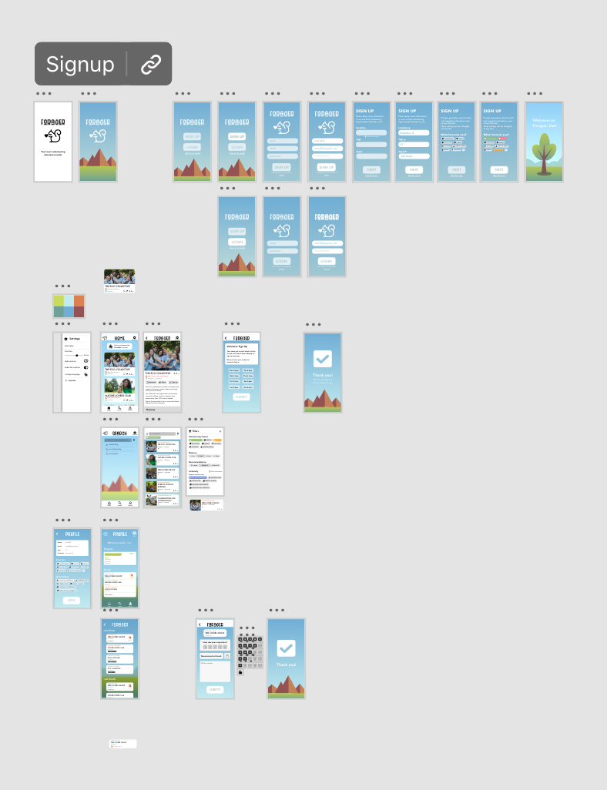
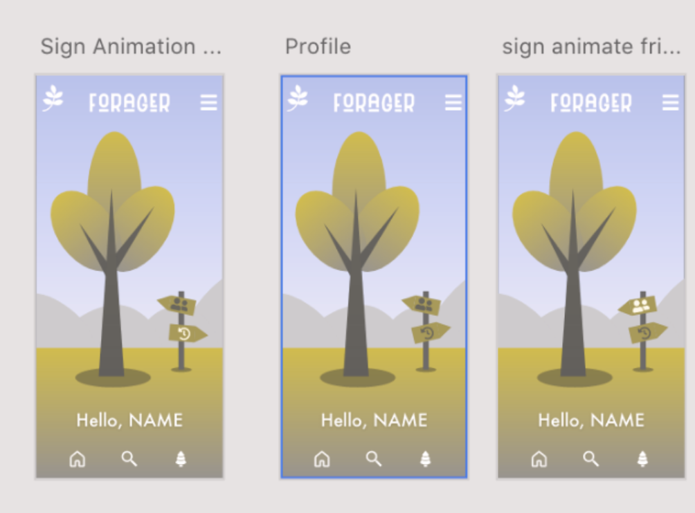

Intro:
During the time period of 10/20 and 11/3, I worked with a partner, Blake, to create a wireframe using Adobe XD that met the specifications given for the Adobe x Amazon Design Jam.
Because we felt like it, we named our team Oat Milk (to acknowledge our mutual lactose intolerance & the superiority of oat milk as a milk substitute.)
Adobe XD is an app in the same vein as Figma. I personally likened it to an elaborate PowerPoint-esque software. It even has the fancy transitions. This was my first time using the software, and my first time making a wireframe.
| Role | Timeline | Tools | Team |
|---|---|---|---|
| UI/UX & Graphic Designer | 2 weeks from 10/20/21 - 11/3/21 | AdobeXD | Blake |
Process
Amazon & Adobe started by releasing a brief that our wireframe design was based on.
Inspired by Amazon’s initiative, your challenge is to design an inclusive experience in a third-party mobile app for high school students looking for opportunities to fulfill community service hours or volunteer to help their local community, no matter what their background or ability.
We began by reviewing apps that we’d used in high school, such as Volunteermatch, and began revising workflows in Adobe XD.
This is our final summary, as well as some images & gifs of the final wireframe.
 When I was trying out different color palettes, I used a color-blindness simulation website to check for contrast. Here's an image that I filtered through it. I believe this is simulating red/green colorblindness.Forager is a volunteer-matching app designed using a social-media inspired framework to streamline the process for high schoolers looking for volunteer opportunities. Similar to the process of volunteering opportunities being spread through word of mouth, Forager features a recommendation and review system to allow users to see which opportunities their friends are involved with.
 Here's a gif of the loading screen.
Here's a gif of the loading screen.
 Ignore my mouse, this is a preview on my computer, so my cursor is visible. This clip shows our settings sidebar, the general format for a post (including recommendations, location, reviews, etc), and the signup process. If we'd had more time we probably would have spent it to make the signup section a bit better, perhaps simulating an external link to a site/more specific timeslots.
Ignore my mouse, this is a preview on my computer, so my cursor is visible. This clip shows our settings sidebar, the general format for a post (including recommendations, location, reviews, etc), and the signup process. If we'd had more time we probably would have spent it to make the signup section a bit better, perhaps simulating an external link to a site/more specific timeslots.
For our home screen, we had a bar that reads the # of days the user has spent volunteering (to help motivate students to keep track of how much they’ve done). We were also recommended by the Amazon UI/UX designer that we were able to meet with to add text to each important icon to increase our accessibility.
 This one shows our filter overlay for search, with a demonstration of which filters & ways to sort were available.
This one shows our filter overlay for search, with a demonstration of which filters & ways to sort were available.
Reflection
This was my first time participating in an Adobe design jam. I enjoyed the timed nature of it. 2 weeks was actually rather long, and I think I did not manage my time as well as I could have. I actually had the worst sleep schedule that I’d ever had in my life during this design jam, and the repercussions of that lasted quite a while, but it was very enjoyable to participate in a timed design project like this.
Based upon my experience with this, I actually chose to participate in another one month later. When I finish that writeup, the link will be here.